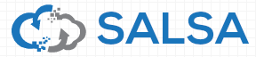

Tools for Software-defined Elastic Systems
rSYBL is a multi-cloud elasticity controller for Software-defined Elastic Systems, enabling users to describe their requirements at multiple levels through SYBL language.
MELA is a tool for monitoring and analysis of elastic cloud services, designed with elasticity in mind, providing features for structuring and enriching information collected from existing monitoring solutions, and discovering boundaries and patterns in elasticity behavior of cloud services
SALSA is a framework for orchrestration and configuration complex cloud-based application, supporting users to deploy applications on cloud and to configure the application dynamically at runtime. SALSA manipulates the application at multiple granular levels and stacks.
QUELLE is a framework for evaluating and recommending deployment configurations for elastic systems from cloud offered services, that both provide the required elasticity, and fulfill cost, quality, and resource requirements
ADVISE
ADVISE is a framework "advising" on elasticity behavior of different cloud service parts.
Hybrid and Diversity-aware Collective Adaptive Systems
PRINGL
PRINGL is a domain-specific, visuo-textual language used for programming incentives for socio-technical systems (e.g., social-computing, crowdsourcing, SCUs, HDA-CAS). It fosters a modular approach in composing incentive elements that promotes code reusability and uniformity of incentives, helping cut down development and adjustment time, and creating a basis for development of standardized but tweakable incentives.
SmartCOM
Here is some description of SmartCOM
Software-defined IoT Clouds
Software-defined Machines
Here is some description